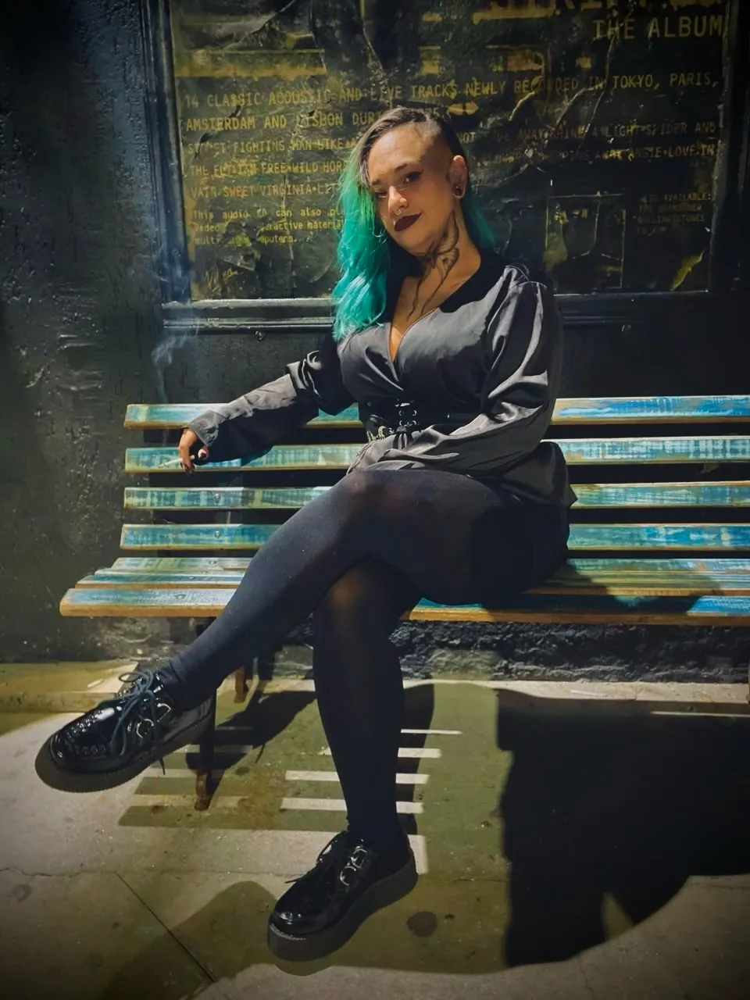
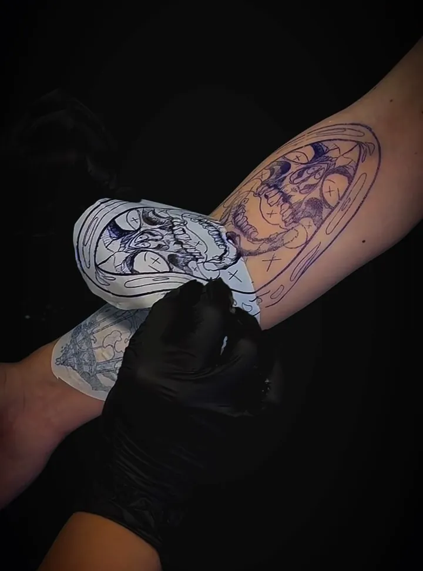
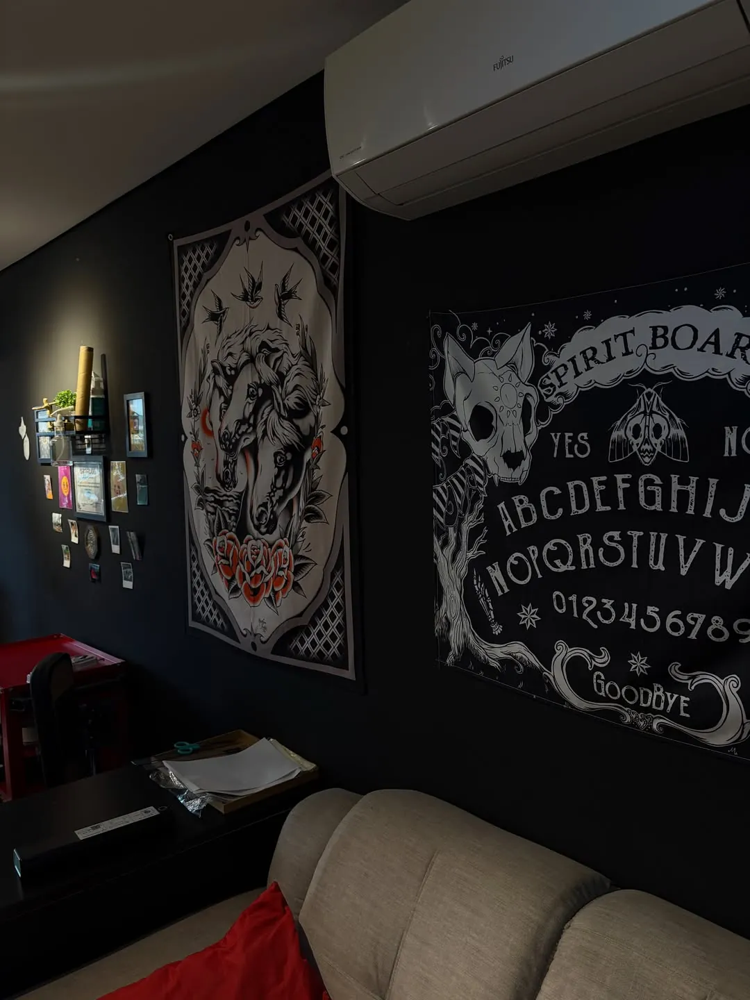
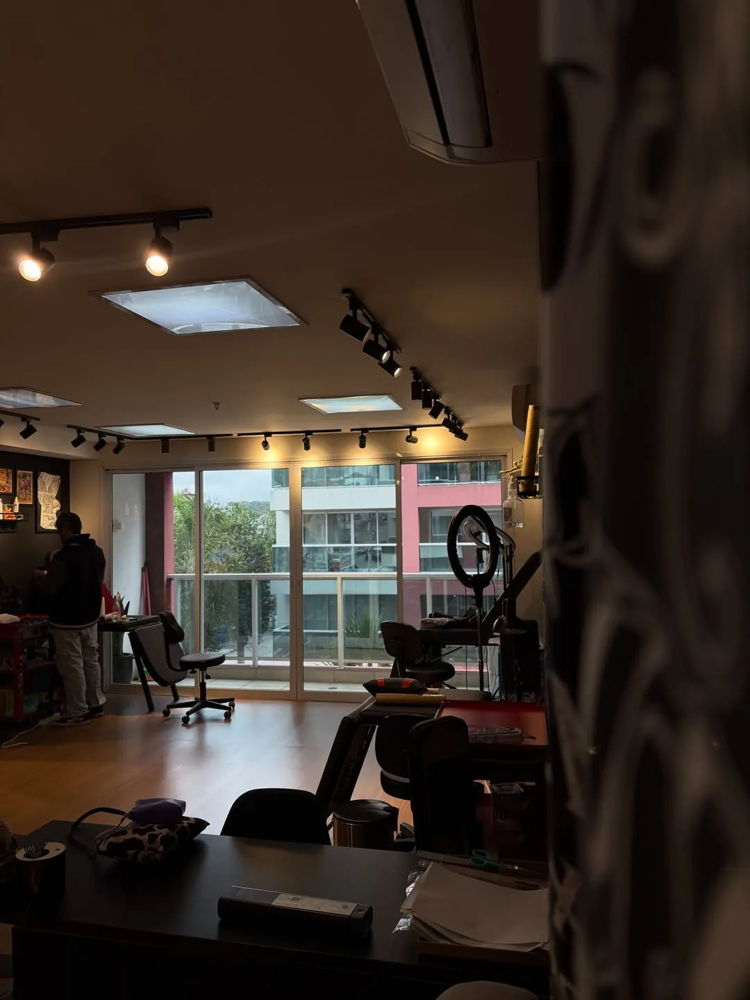
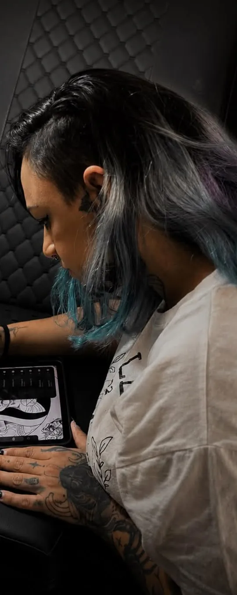

Na Ponta da Agulha · Ipiranga, SP
Bárbara Gomes
Sombra, arte e intenção
Desenhos autorais em blackwork, criados do zero para o seu corpo.
- EstiloBlackwork e neo dark
- AtendimentoEstúdio privado, hora marcada
- OrçamentoPelo WhatsApp

A artista
Um novo capítulo
“Algumas mudanças acontecem primeiro no traço.”
Durante anos, o traço da Bárbara foi fino e delicado: flores, pets, homenagens, nomes de quem a gente ama. Em 2026 ela abriu um capítulo novo e passou a desenhar o que sempre quis desenhar: blackwork autoral, com sombra pesada, contraste e atmosfera.
Caveiras, ceifadores, bruxas, cartas de tarô, deusas gregas e um pouco de terror japonês. Cada peça nasce no papel pensando em composição e no lugar do corpo onde vai morar, e por isso ninguém sai com a tattoo de outra pessoa.
Hoje ela atende num estúdio privado no Ipiranga, que divide com o companheiro de negócio, de arte e de vida, @_tktattoos.
- Caveiras
- Ceifadores
- Bruxaria
- Tarô
- Mitologia
- Terror e anime
Portfólio
Trabalhos em blackwork
Tatuagens feitas e projetos ainda no papel. Toque numa imagem para ver maior.
Flash autoral
Artes disponíveis
Desenhos prontos, feitos por ela e tatuados uma vez só. Enquanto o estilo novo ganha portfólio, as artes da coleção saem com valor especial.
- Valor de portfólio
- R$ 350 cada
- Tamanho
- Entre 10 e 15 cm
- Exclusivas
- Tatuada uma vez, sai da lista
Valores e disponibilidade confirmados na conversa. Artes sem valor indicado têm orçamento conforme tamanho e local.
Como funciona
Do papel à pele
Da primeira conversa ao último detalhe, cada projeto é pensado para você.
-
A conversa
Você manda a ideia pelo WhatsApp: o tema, o lugar do corpo e o tamanho que imagina. Referência ajuda, mas não precisa ser cópia de Pinterest.
-
O desenho
A Bárbara cria a arte do zero, pensando em composição, contraste e no encaixe na sua anatomia. Você vê o projeto antes de agendar a sessão.
-
O decalque
No dia, o desenho vai para a pele em decalque e você vê como ficou no corpo antes da agulha. Para muita gente, é a melhor parte da sessão.
-
A sessão
Estúdio privado, organizado e preparado antes de você chegar. Você só escolhe a playlist.

Antes de fechar sua tattoo
O que a Bárbara faria se estivesse do outro lado da maca:
- Não escolher uma tattoo só porque achou bonita no Pinterest.
- Procurar quem realmente tenha o estilo que você quer.
- Pensar com calma no tamanho e no lugar do corpo.
- Não ter pressa para fechar o desenho: boas ideias também precisam de tempo.
- Deixar a artista colocar a visão dela no projeto.
Antes do capítulo novo
Traço fino e homenagens
Fineline, pets e flores que construíram a mão da Bárbara. Quer algo delicado? Pergunte no orçamento.
Quem já tatuou
Feedbacks
-
Obrigada por colocar tanto carinho, cuidado e significado em cada traço.
Carolina · cliente desde a escola
-
O que essa tatuagem fez de sucesso no carnaval… todo mundo ficou apaixonado.
Fernanda
-
Eu ameeei! Namorando elas a todo momento.
Lia
-
Quando a tatuadora e o couro é bão dimais, só!
Carolina · fechamento de braço
Onde ela tatua
Estúdio privado no Ipiranga
Atendimento só com hora marcada, uma pessoa por vez. O endereço completo vai junto com a confirmação do horário.



Agenda aberta
Me conte sua ideia
Preencha o básico e a mensagem já sai pronta para o WhatsApp da Bárbara.